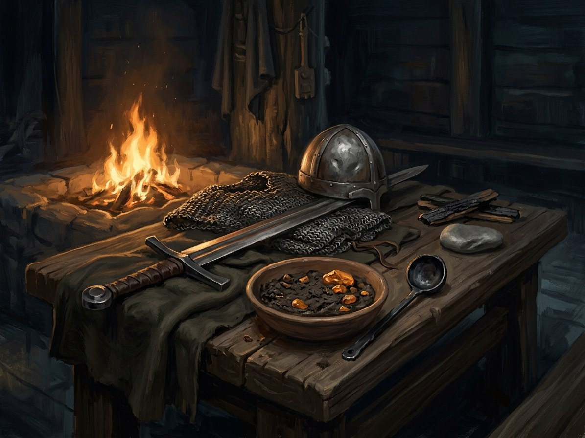

Iron Saint’s fearlessness¶
What it is¶
The Iron Saint’s fearlessness: granted power from the Iron Saint. It gives tireless marching, immunity to terror and absence of pity.
Iron Saint’s fearlessness

Iron Saint’s fearlessness · school¶
Type |
school |
Family |
granted |
Note |
The cold zeal and absolute fearlessness bestowed by the Iron Saint. |
Who can use it (path & tier)¶
Order knights and their commanders who are “real enough”: Zöllner (tier 3, from 1382) and Jungingen (tier 3, from 1407). It comes when thousands of prayers, indulgences and Reise marches are poured into one battle so that the fight is easy for all who truly believe.
How it works (medium, words, timing)¶
No words are needed from the knight; the prayers do the work. Signs: furnace heat in winter, quench-water smell, crosses that ring like anvils, ice melting on the shields, snow blackening under their steps (Book VI ch. 24). The ranks narrow and thicken; faces “of men who feel nothing” (Book VI ch. 7).
Costs¶
Pity dies; such knights cannot weep. The Force’s nature binds the bearer, and the gift can be withdrawn all at once: at Grunwald a knight lowers his sword and tears come, then another and a third (Book III ch. 20).
Limits & counters¶
It counters Earth’s Unmovable Will and Fire’s terror (magic rules §9): neither has a grip on the knights. Against it: the only counter in the books is the Force’s own death, at Grunwald (Book III ch. 20), and the weeping that follows. The gift does not care what creed the bearer has; it needs only appetite and an institution to feed it.
Folk basis [Historical record]¶
[Historical record]. The Order was a religious order of monk-knights under a Rule, with Marian devotion, and its Reise campaigns (with Western “guests”, indulgences and the Ehrentisch feast) were preached as crusades. Chroniclers (Dusburg, Wigand) recorded real discipline and real brutality. The “fearlessness” is saga overlay.
Notable practitioners¶
Zöllner (Book I ch. 17–18), Jungingen (Book III ch. 11, 20), and the nameless knights of the Strėva (1348) and Rudau (1370) fights in Book VI ch. 7 and 24. Brother Hartmann, Marienburg’s stove-keeper, notices the cellar stone warming (Book III ch. 11).
Relations
Counters: Žemė (Earth)
Patrons: Geležinis Šventasis (Ferrum Sanctum)
Practitioners: Konrad Zöllner von Rotenstein (1382–…) — tier 3 · Ulrich von Jungingen (1407–…) — tier 3
- School
- Granted power from the Iron Saint, an egregore of the Order
- Tier
- Casting
- None from the knight. Thousands of prayers, indulgences and Reise marches poured into one battle do the work
- Components
- Real belief or appetite, and an institution to feed it. The creed does not matter
- Cost
- Pity dies. Such knights cannot weep
- Duration
- For the battle. It can be withdrawn all at once
- Limits
- Needs the appetite of an institution behind it. Faces become those of men who feel nothing
- Counters
- Only the Force's own death, at Grunwald, and the weeping that follows. It counters Earth's Unmovable Will and Fire's terror
The gift. Fearlessness, tireless marching, absence of pity, and immunity to Earth's terror and Fire's terror. Signs: furnace heat in winter, quench-water, crosses that ring like anvils.
Feast-day iron. Whoever wields it is noticed by the Iron Saint. It is tempered by appetite, not faith.
Grunwald. At Grunwald a knight lowers his sword and tears come, then another, then a third (Book III ch. 20).
Connections¶
graph LR
el_earth["Žemė (Earth)"]
iron_gift["Iron Saint's fearlessness"]
iron_saint["Geležinis Šventasis (Ferrum Sanctum)"]
jungingen["Ulrich von Jungingen"]
zollner["Konrad Zöllner von Rotenstein"]
iron_gift -->|Counters| el_earth
iron_saint -->|Patron of| iron_gift
zollner -->|Practises| iron_gift
jungingen -->|Practises| iron_gift
style iron_gift stroke-width:3px